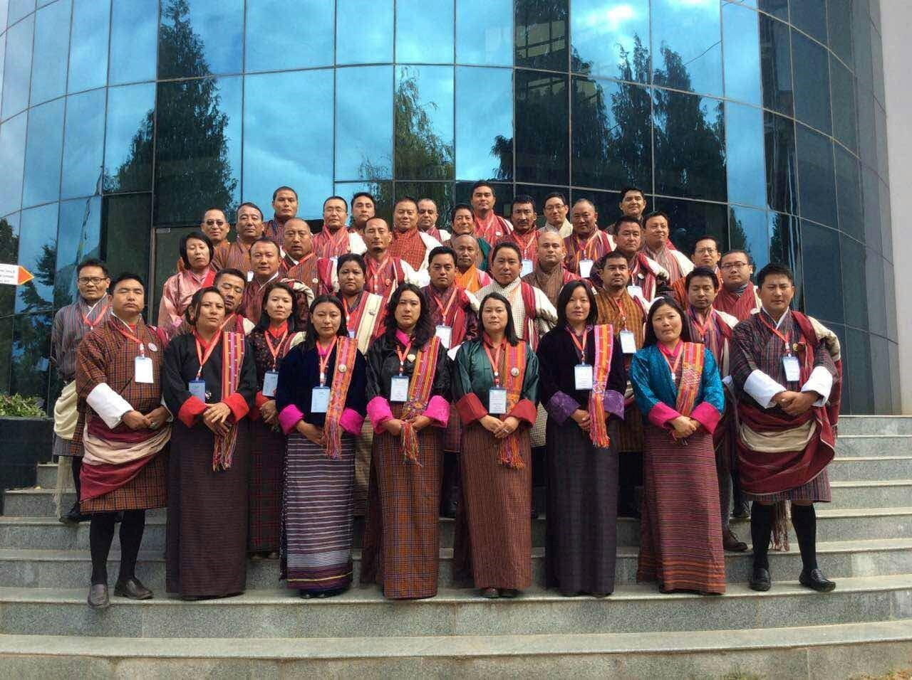

Leadership is the power to diffuse a positive energy and a sense of greatness. As such, it rests almost entirely on the leader. The absence of that leader for any reason can lead to the authority's power dissolving. However, due to its idiosyncratic nature and lack of formal organization, charismatic authority depends much more strongly on the perceived legitimacy of the authority than Weber's other forms of authority. For instance, a charismatic leader in a religious context might require an unchallenged belief that the leader has been touched by God, in the sense of a prophet. Should the strength of this belief fade, the power of the charismatic leader can fade quickly, which is one of the ways in which this form of authority shows itself to be unstable. In contrast to the current popular use of the term charismatic leader, Weber saw charismatic authority not so much as character traits of the charismatic leader but as a relationship between the leader and his followers. The validity of charisma is founded on its "recognition" by the leader's followers (or "adepts" – Anhänger). His charisma risks disappearing if he is "abandoned by God" or if "his government doesn't provide any prosperity to those whom he dominates"
 SSLP is a non-credited certificate programme and offers leadership trainings to interested students. The programme was designed with support from Renaissance collage, University of New Brunswick(UNB).It is one of the most successsful certificate level courses in the college.The programme is offered every semester.Students enrolled in this programme have to attend three hours of class every week for 13 weeks.The Classes are usually held on Saturdays.To meet the running expenses of the programme students will have to pay minimum amount decided by the SSLP team members.
1.Enable high levels of organizational performance within SmithBucklin client associations to ensure their vitality, relevance and long-term success.
2.Add tangible value to the volunteer experience by offering a unique and meaningful professional and personal development opportunity. The program is a gift of great value and life-long impact to the individual, to the association and to the individual's employer.
3.Demonstrate SmithBucklin's stewardship pledge and spotlight its distinct value-add to client associations.
4.Cultivate a vibrant leadership culture within and among SmithBucklin client associations.
5.Create a growing SmithBucklin client community of leadership students and champions who model desired behaviors and practices while coaching and mentoring others.
Copyright © 2011-2012. All Rights Reserved.